Dashboard
With Pmv 1.5.6 we introduce a completely re-designed dashboard widget that facilitates carrying out Pmv commands that previously required navigating through several menus and forms with a single click. This interface presents molecules and molecular fragments in a tree structure. The matrix of buttons to the right of the tree is used to carry out the Pmv command corresponding to the column on the molecular fragment corresponding to the line. For instance, in the picture below, the crosshair is on the ‘S’ column which is the Pmv selection command and the chain ‘B’ line under protease, a protein loaded in Pmv. As the tooltip indicates, clicking a first time on this square button will select the chain B of protease. Clicking a second time on this button will deselect the entire protein.
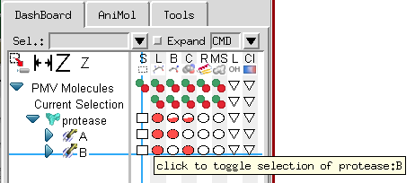
The Pmv commands mapped to the columns of buttons are: select
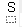
, display lines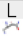
, display balls and sticks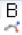
, display CPK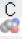
, display Ribbon , display molecular surface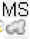
, display labels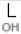
, and color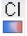
commands. Tooltips indicate the function of each button.There are three types of buttons in the Dashboard. The first type
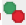
is a stateless button with 2 functions: the green circle carries out the command (i.e. select, display, label) while the red circle negates the command (i.e. deselect, undisplay, unlabel).The second type of buttons (e.g.  , ,
, ,
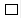
,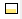
) show the fraction of the group for which the state is on. In the picture above, all of protease is displayed as lines so there are full solid red circles in the display line column, while only chain A is displayed as balls and sticks so the circle for chain A displayed as balls and sticks is solid while the circle for balls and sticks for protease is ½ solid (i.e. 1 chain out of 2). Clicking on a button that has less than 100% of its children on forces the command on all children. Clicking on a button that is completely on (solid) negates the command. In other words, the cycle is ⇒
⇒ 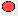
⇒ ⇒
⇒  … where ⇒ represents clicking on the button.
… where ⇒ represents clicking on the button.
In general, left clicking on a button carries out the command with default parameters, while right click opens an option panel specific to the command. However, there are exceptions. For instance, the menu buttons for labeling and coloring have no action associated with the right click event while the selection command has a selection menu associated with the right click.
Working with the ‘Current Selection’
Pmv has powerful commands for creating selections. In the dashboard, one can type selection strings
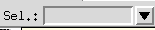
to create a selection or use the button in the left most column . The line of buttons located to the right of ‘Current Selection in the tree supports operations on the current selection. Note that there is no button on in the Select column of that line, since selecting the current selection does not do anything.
. The line of buttons located to the right of ‘Current Selection in the tree supports operations on the current selection. Note that there is no button on in the Select column of that line, since selecting the current selection does not do anything.
Creating custom sets
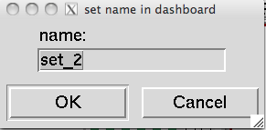
A Pmv selection can be saved as a new line in the Dashboard to facilitate rapid Dashboard-based operations on this specific subset. This is done using the
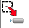
button in the upper left corner. When this button is clicked on and there is a selection, a dialog is displayed asking for a name for the set.Clicking ‘OK’ in this dialog will add a line to the dashboard tree widget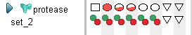
.Sets can be renamed or removed through the menu obtained by right clicking on the set name in the tree widget.
Configuring the Dashboard
The button located above the tree widget sets the dashboard width so that all command columns are visible (
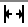
), increases the size of the command button ( ), and decreases the size of the command buttons (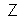
). Note that the height of the lines in the tree is fixed, which causes the circles to become ovals for large button sizes.Labeling
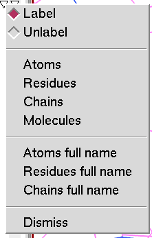
The Labeling menu lets the user add and remove atom, residue, chain or molecule labels. Full labels are composed of 4 strings separated by colons MolName : ChainName : ResidueName : AtomName.
The ion list linked above (http://decogroup.org/ion_list.txt) no longer exists (404, 2026-10-14).